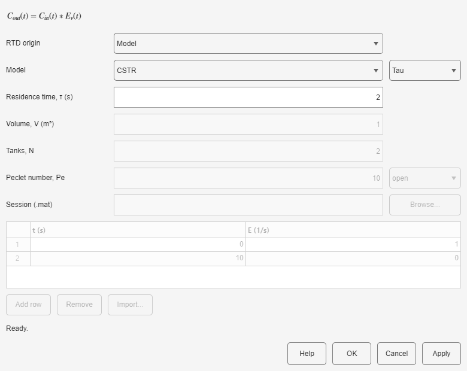

Define the vessel from an analytical model, tabulated E(t), or a saved analysis session. The block applies the vessel distribution to both the concentration signal and the accumulated path RTD.
Choose whether the residence time is known directly or from V/Q. Confirm that the final time is long enough to capture the RTD tail, especially for a CSTR or a low-Pe dispersion model.

| Model | What to enter | Interpretation |
|---|---|---|
| CSTR | τ or V with the incoming Q | Exponential tail for one perfectly mixed vessel. |
| PFR | τ or V with Q | Concentrated delay near the nominal residence time. |
| Tanks | τ or V, and integer N | N equal mixed tanks in series; larger N narrows the distribution. |
| Dispersion | τ or V, Peclet number Pe, open or closed boundary | Axial dispersion; larger Pe approaches plug flow. Boundary choice must match the experimental interpretation. |
.mat session containing an RTD.| Symptom | What to do |
|---|---|
| Pe is requested | Enter a positive Peclet number and select the intended open or closed boundary. |
| Volume basis cannot be evaluated | Verify that the upstream source supplies a positive constant Q. |
| An RTD session cannot be used | Select a session that contains valid time and RTD data. |
| The CSTR tail is truncated | Increase tfinal in Tracer Flowsheet. |